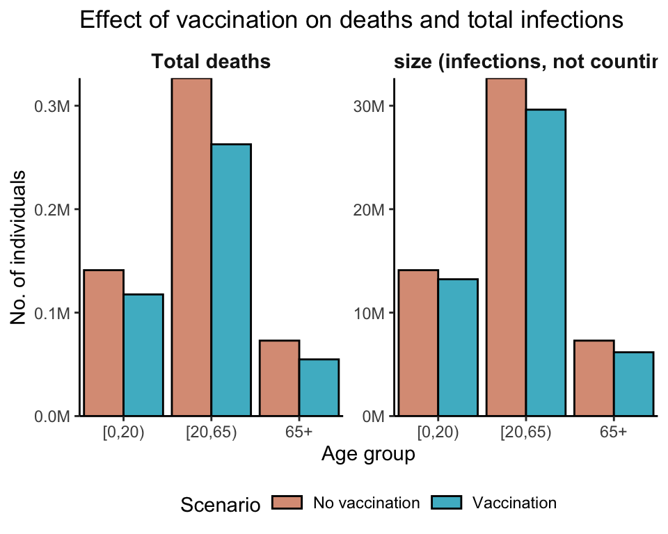

library(epidemics)
library(data.table)
library(ggplot2)
library(colorspace)
library(scales)Vacamole
This example is taken from the documentation of the R package epidemics.
Prepare population and initial conditions
Prepare population and contact data.
# load contact and population data from socialmixr::polymod
polymod <- socialmixr::polymod
contact_data <- socialmixr::contact_matrix(
polymod,
countries = "United Kingdom",
age.limits = c(0, 20, 65),
symmetric = TRUE
)Using POLYMOD social contact data. To cite this in a publication, use the 'cite' functionRemoving participants that have contacts without age information. To change this behaviour, set the 'missing.contact.age' option# prepare contact matrix
contact_matrix <- t(contact_data$matrix)
# prepare the demography vector
demography_vector <- contact_data$demography$population
names(demography_vector) <- rownames(contact_matrix)Prepare initial conditions for each age group. The Vacamole model has 11 compartments and therefore requires a matrix with 11 columns.
# initial conditions
initial_i <- 1e-6
# // 0| 1| 2|3| 4|5| 6|7| 8|9|10
# // S|V1|V2|E|EV|I|IV|H|HV|D|R
# make initial conditions - order is important
initial_conditions <- c(
S = 1 - initial_i,
V1 = 0, V2 = 0,
E = 0, EV = 0,
I = initial_i, IV = 0,
H = 0, HV = 0, D = 0, R = 0
)
initial_conditions <- rbind(
initial_conditions,
initial_conditions,
initial_conditions
)
# assign rownames for clarity
rownames(initial_conditions) <- rownames(contact_matrix)Prepare the time in days over which to model the epidemic, with the outbreak beginning at day zero.
epidemic_days <- 300Prepare a population as a population class object.
uk_population <- population(
name = "UK",
contact_matrix = contact_matrix,
demography_vector = demography_vector,
initial_conditions = initial_conditions
)Prepare pathogen parameters
# make infection class for Vacamole model
# note extra arguments passed as ...
infect <- infection(
name = "covid", r0 = 3, infectious_period = 10,
preinfectious_period = 5,
eta = 1 / 1000, omega = 1 / 1000,
susc_reduction_vax = 0.5,
hosp_reduction_vax = 0.5,
mort_reduction_vax = 0.5
)Prepare a two dose vaccination campaign
We prepare a two-dose vaccination campaign by concatenating two single dose vaccination regimes, i.e., applying the function c() to two vaccination objects.
# prepare a two dose vaccination regime for a single age group
# prepare the first dose
dose_1 <- vaccination(
name = "two-dose vaccination", # name given to first dose
nu = matrix(1e-2, nrow = 3),
time_begin = matrix(30, nrow = 3),
time_end = matrix(epidemic_days, nrow = 3)
)
# prepare the second dose with a 30 day interval in start date
dose_2 <- vaccination(
name = "two-dose vaccination", # name given to first dose
nu = matrix(1e-2, nrow = 3),
time_begin = matrix(60, nrow = 3),
time_end = matrix(epidemic_days, nrow = 3)
)
# use `c()` to combine the two doses
double_vaccination <- c(dose_1, dose_2)
# print to visualise
double_vaccination<vaccination>
Vaccination name: "two-dose vaccination"
Time begin:
dose_1 dose_2
[1,] 30 60
[2,] 30 60
[3,] 30 60
Time end:
dose_1 dose_2
[1,] 300 300
[2,] 300 300
[3,] 300 300
Vaccination rate:
dose_1 dose_2
[1,] 0.01 0.01
[2,] 0.01 0.01
[3,] 0.01 0.01We prepare a dummy vaccination regime of no vaccination against which to compare the two-dose vaccination campaign. This is done by using the no_vaccination() function and specifying the number of doses (here, 2 doses).
# prepare a null vaccination regime with two doses
# use the convenience function `no_vaccination()`
no_vaccination <- no_vaccination(population = uk_population, doses = 2)Model epidemic using Vacamole
First, we run the model with no vaccination.
data <- epidemic(
model_name = "vacamole",
population = uk_population,
infection = infect,
vaccination = no_vaccination, # note custom no_vaccination object
time_end = epidemic_days
)Next we run the model with a two dose vaccination regime.
data_vaccination <- epidemic(
model_name = "vacamole",
population = uk_population,
infection = infect,
vaccination = double_vaccination, # note custom object for two doses
time_end = epidemic_days
)Visualise model outcomes
First, we calculate the total number of infections resulting in recoveries and deaths over the course of the simulation; this is the epidemic’s final size.
# collect data from the two scenarios
data_scenarios <- list(data, data_vaccination)
# get deaths and recoveries from infection
data_scenarios <- Map(
data_scenarios, c("no_vax", "vax"),
f = function(df, sc) {
df_ <- unique(df[, "demography_group"], by = "demography_group")
# get total deaths per group
df_$total_deaths <- df[time == max(time) & compartment == "dead", ]$value
# get total recoveries per group using helper function `epidemic_size()`
df_$total_recovered <- epidemic_size(df, deaths = FALSE) # do not count dead
# add scenario information
df_$scenario <- sc
# return data
df_
}
)
# collect data
data_scenarios <- rbindlist(data_scenarios)
# transform to long format
data_scenarios <- melt(
data_scenarios,
id.vars = c("demography_group", "scenario")
)ggplot(data_scenarios) +
geom_col(
aes(demography_group, value, fill = scenario),
position = "dodge",
colour = "black"
) +
facet_wrap(
~variable,
scales = "free_y",
labeller = labeller(
variable = c(
"total_deaths" = "Total deaths",
"total_recovered" = "Epidemic size (infections, not counting deaths)"
)
)
) +
scale_fill_discrete_qualitative(
palette = "Dynamic",
labels = c("No vaccination", "Vaccination"),
name = "Scenario",
na.value = "lightgrey"
) +
scale_y_continuous(
labels = label_comma(
scale = 1e-6, suffix = "M"
)
) +
theme_classic() +
theme(
legend.position = "bottom",
legend.key.height = unit(2, "mm"),
strip.background = element_blank(),
strip.text = element_text(
face = "bold",
size = 11
)
) +
expand_limits(
x = c(0.5, length(unique(data_scenarios$demography_group)) + 0.5)
) +
coord_cartesian(
expand = FALSE
) +
labs(
x = "Age group",
y = "No. of individuals",
title = "Effect of vaccination on deaths and total infections"
)
Finally, we can compare the peak of hospital bed occupancy in each scenario — this can be a rough indication of how much hospital capacity would be required if a pandemic of these characteristics were to occur, as well as another way to examine the effect of vaccination in reducing this requirement.
# collect data from the two scenarios
data_scenarios <- list(data, data_vaccination)
peak_hospital_occupancy <- vapply(data_scenarios, function(df) {
# get highest hospital occupancy
# first get total hospitalisations among vaccinated and un- or part-vacc.
df <- dcast(
df[compartment %like% "hospitalised", ],
time + demography_group ~ compartment,
value.var = "value"
)
df[, total_hosp := hospitalised + hospitalised_vaccinated]
# sum all age groups
df <- df[, list(total_hosp = sum(total_hosp)), by = "time"]
df[total_hosp == max(total_hosp), ]$total_hosp
}, FUN.VALUE = numeric(1))
# set names for comprehensibility
names(peak_hospital_occupancy) <- c("No vaccination", "Vaccination")
# show peak hospital occupancy in a readable format
format(peak_hospital_occupancy, big.mark = ",", digits = 1)No vaccination Vaccination
"95,063" "69,827" This example demonstrates that implementing vaccination can substantially reduce peak hospital occupancy (by about 27%) compared to a scenario in which no vaccines are deployed.